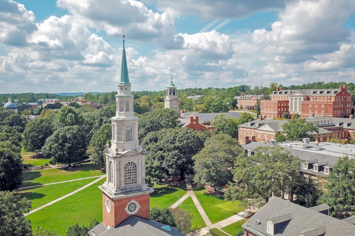
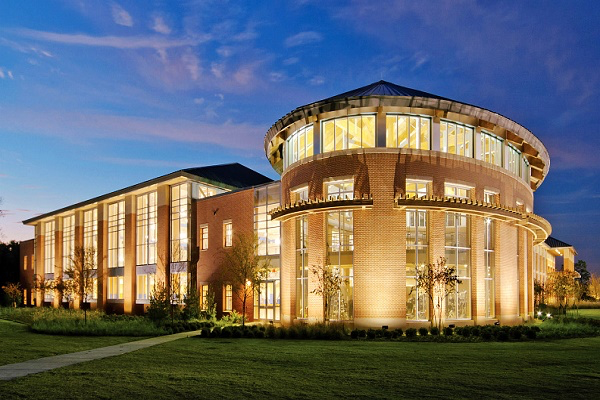

University of Alabama (Tuscaloosa, AL)
Established in 1831, the University of Alabama is the oldest and largest of the public universities in Alabama. Known for its strong programs in Law, Business, and Engineering, it also has a vibrant campus life accentuated by its successful athletic programs, especially in football.
Academic Strengths:
Law, Business, Engineering, Communication and Information Sciences, Nursing
Campus and Facilities:
Features historical architecture mixed with modern facilities, including state-of-the-art research centers.
Student Life:
Offers a diverse array of student organizations, Greek life, and community service opportunities.
Tuition and Financial Aid:
Approximately $10,780 for in-state and $30,250 for out-of-state students. Financial aid is available through scholarships, grants, and loans.
Admissions:
Requires ACT or SAT scores, high school transcripts, and GPA. The admissions process is moderately selective.
Notable Alumni:
Harper Lee, Joe Namath, and Winston Groom

Samford University (Birmingham, AL)
Founded in 1841, Samford is the top private university in Alabama, known for its strong emphasis on ethics and leadership.
Academic Strengths:
Pharmacy, Nursing, Business, Law, Education
Campus and Facilities:
Features colonial-style architecture, with a small, close-knit campus environment.
Student Life:
Strong Christian community, numerous local and international mission opportunities, and various cultural organizations.
Tuition and Financial Aid:
Tuition is approximately $32,850, with a wide range of scholarships and financial aid options available.
Admissions:
More selective, looking at holistic aspects of an applicant including leadership roles, community service, and academic performance.
Notable Alumni:
Bobby Bowden, Cordell Hull

University of Alabama at Birmingham (UAB) (Birmingham, AL)
Established independently in 1969, UAB has made a name for itself, especially in health sciences. It is highly ranked for its medical research and primary care programs.
Academic Strengths:
Medicine, Nursing, Health Professions, Business, Education
Campus and Facilities:
Urban campus with modern facilities, including top-ranked hospitals and medical research centers.
Student Life:
Diverse student body with a wide range of cultural, academic, and pre-professional organizations.
Tuition and Financial Aid:
Costs about $8,568 for in-state and $19,704 for out-of-state students. Various financial aid packages available.
Admissions:
Moderately selective; requires standardized test scores and GPA.
Notable Alumni:
Regina Benjamin, Vonetta Flowers

University of South Alabama (Mobile, AL)
Founded in 1963, it offers a variety of accredited degree programs and is known for its medical school.
Academic Strengths:
Medicine, Nursing, Engineering, Business
Campus and Facilities:
Modern campus with advanced facilities for health education, including hospitals and research labs.
Student Life:
Active Greek life, intramural sports, and over 200 student organizations.
Tuition and Financial Aid:
In-state tuition is about $8,396, while out-of-state is $16,292. Financial assistance is widely available.
Admissions:
Requires GPA, SAT/ACT scores, and has rolling admissions.
Notable Alumni:
Jimmy Buffett, Rodger McFarlane

Auburn University (Auburn, AL)
Founded in 1856, Auburn University is one of the largest universities in the South. It is recognized for its rigorous academics and is ranked among the top 50 public schools in the United States.
Academic Strengths:
Engineering, Business, Education, Forestry and Wildlife Sciences, Veterinary Medicine
Campus and Facilities:
Known for its beautiful campus and comprehensive facilities including extensive research labs.
Student Life:
Robust student engagement through clubs, sports, and Greek life. Known for its welcoming student culture.
Tuition and Financial Aid:
Around $11,492 for in-state and $31,124 for out-of-state students. Offers substantial financial aid options.
Admissions:
Selective, with emphasis on ACT/SAT scores, GPA, and extracurricular involvement.
Notable Alumni:
Tim Cook, Octavia Spencer, and Charles Barkley


About
Contact us
FAQS
Terms and conditions
Cookie policy
Privacy
Copyright 2024 - AL College Guide